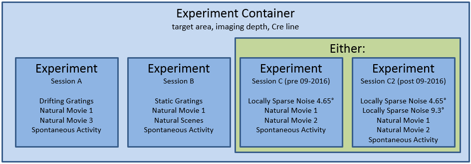

Brain Observatory¶
The Allen Brain Observatory is a database of the visually-evoked functional responses of neurons in mouse visual cortex based on 2-photon fluorescence imaging. Characterized responses include orientation tuning, spatial and temporal frequency tuning, temporal dynamics, and spatial receptive field structure.
The data is organized into experiments and experiment containers. An experiment container represents a group of experiments with the same targeted imaging area, imaging depth, and Cre line. The individual experiments within an experiment container have different stimulus protocols, but cover the same imaging field of view.

Note: Version 1.3 of scipy fixed an error in its 2 sample Kolmogorov-Smirnoff test implementation. The new version produces more accurate p values for small and medium-sized samples. This change impacts speed tuning analysis p values (as returned by StimulusAnalysis.get_speed_tuning). If you access precalculated analysis results via BrainObservatoryCache.get_ophys_experiment_analysis, you will see values calculated using an older version of scipy’s ks_2samp. To access values calculated from the new version, install scipy>=1.3.0 in your environment and construct a StimulusAnalysis object from a BrainObservatoryNwbDataSet (as returned by BrainObservatoryCache.get_ophys_experiment_data).
Note: Data collected after September 2016 uses a new session C stimulus designed to better-characterize spatial receptive fields in
higher visual areas. The original locally sparse noise stimulus used 4.65 visual degree pixels. Session C2 broke that stimulus
into two separate stimulus blocks: one with 4.65 degree pixels and one with 9.3 degree pixels. Note that the stimulus_info
module refers to these as locally_sparse_noise_4deg and locally_sparse_noise_8deg, respectively.
For more information on experimental design and a data overview, please visit the Allen Brain Observatory data portal.
Data Processing¶
For all data in Allen Brain Observatory, we perform the following processing:
Segment cell masks from each experiment’s 2-photon fluorescence video
Associate cells from experiments belonging to the same experiment container and assign unique IDs
Extract each cell’s mean fluorescence trace
Extract mean fluorescence traces from each cell’s surrounding neuropil
Demix traces from overlapping ROIs
Estimate neuropil-corrected fluorescence traces
Compute dF/F
Compute stimulus-specific tuning metrics
All traces and masks for segmented cells in an experiment are stored in a Neurodata Without Borders (NWB) file. Stored traces include the raw fluoresence trace, neuropil trace, demixed trace, and dF/F trace. Code for extracting neuropil-corrected fluorescence traces, computing dF/F, and computing tuning metrics is available in the SDK.
New in June 2017: Trace demixing is a new addition as of June 2017. All past data was reprocessed using the new demixing algorithm. We have also developed a new module to better characterize a cell’s receptive field. Take a look at the receptive field analysis example notebook
For more information about data processing, please read the technical whitepapers.
Getting Started¶
The Brain Observatory Jupyter notebook has many code samples to help get started with the available data:
The code used to analyze and visualize data in the Allen Brain Observatory data portal is available as part of the SDK. Take a look at this Jupyter notebook to find out how to:
More detailed documentation is available demonstrating how to:
Precomputed Cell Metrics¶
A large table of precomputed metrics are available for download to support population analysis and filtering. The table below describes
all of the metrics in the table. The get_cell_specimens() method
will download this table as a list of dictionaries which can be converted to a pandas DataFrame as shown in this
Jupyter notebook.
Stimulus |
Metric |
Field Name |
|---|---|---|
drifting gratings |
orientation selectivity |
osi_dg |
direction selectivity |
dsi_dg |
|
preferred direction |
pref_dir_dg |
|
preferred temporal frequency |
pref_tf_dg |
|
response p value |
p_dg |
|
global ori. selectivity |
g_osi_dg |
|
global dir. selectivity |
g_dsi_dg |
|
response reliability |
reliability_dg |
|
running modulation |
run_mod_dg |
|
running modulation p value |
p_run_mod_dg |
|
pref. condition mean df/f |
peak_dff_dg |
|
TF discrimination index |
tfdi_dg |
|
static gratings |
orientation selectivity |
osi_sg |
preferred orientation |
pref_ori_sg |
|
preferred spatial frequency |
pref_sf_sg |
|
preferred phase |
pref_phase_sg |
|
mean time to peak response |
time_to_peak_sg |
|
response p value |
p_sg |
|
global ori. selectivity |
g_osi_sg |
|
reponse reliability |
reliability_sg |
|
running modulation |
run_mod_sg |
|
running modulation p value |
p_run_mod_sg |
|
pref. condition mean df/f |
peak_dff_ns |
|
SF discrimiation index |
sfdi_sg |
|
natural scenes |
mean time to peak response |
time_to_peak_ns |
preferred scene index |
pref_scene_ns |
|
response p value |
p_ns |
|
image selectivity |
image_sel_ns |
|
running modulation |
run_mod_ns |
|
running modulation p value |
p_run_mod_ns |
|
pref. condition mean df/f |
peak_dff_ns |
|
natural movie 1 |
response reliability (session A) |
reliability_nm1_a |
response reliability (session B) |
reliability_nm1_b |
|
response reliability (session C) |
reliability_nm1_c |
|
natural movie 2 |
response reliability |
reliability_nm2 |
natural movie 3 |
response reliability |
reliability_nm3 |
locally sparse noise |
RF area (on subunit) |
rf_area_on_lsn |
RF area (off subunit) |
rf_area_off_lsn |
|
RF center (on subunit) |
rf_center_on_x, rf_center_on_y |
|
RF center (off subunit) |
rf_center_off_x, rf_center_off_y |
|
RF chi^2 |
rf_chi2_lsn |
|
RF on-off subunit distance |
rf_distance_lsn |
|
RF on-off subunit overlap index |
rf_overlap_lsn |